01
ESRA
The runtime-neutral architecture: contracts, schemas, benchmarks, safety boundaries, and the protocol for one auditable improvement cycle.
Read the specificationESRA turns agent self-improvement from an assumption into a bounded, observable process. ESRA Agents makes that process portable across AI hosts—without giving autonomy a blank cheque.
OPEN SPECIFICATION · APACHE-2.0

The boundary is deliberate: ESRA defines what reliable evolution means. ESRA Agents implements the portable skills, runtime behavior, evidence records, and thin host adapters.
The runtime-neutral architecture: contracts, schemas, benchmarks, safety boundaries, and the protocol for one auditable improvement cycle.
Read the specificationThe canonical cross-host implementation: five selective skills, a dependency-free runtime, guarded promotion, export, and adapters that stay thin by design.
Explore the implementationSelect a stage to see how ESRA moves from observation to learning while preserving intent, evidence, and rollback.
Capture a concrete signal: a failure, anomaly, recurring friction, or opportunity. Record what happened without inventing an explanation.
Routine work bypasses ESRA. Significant improvement moves through explicit gates, and protected surfaces remain under human control.
Use ESRA when the stakes or learning value justify a cycle—not as ceremony around ordinary work.
Proposals are tested against a declared hypothesis, evaluation method, and success threshold.
Only the revision that was evaluated can be authorized for guarded local promotion.
Persist allowlisted metadata and hashes—not prompts, transcripts, tool payloads, secrets, or raw run IDs.
Portable contracts stay neutral while lifecycle events, permissions, and paths remain host-specific.
Canary rollout and recovery evidence are first-class parts of the improvement record.
ESRA’s status language stays intentionally precise. Package checks, conformance, and isolated host tests are useful evidence; none of them silently become a universal production claim.
Read the architecture, choose a host, and verify every claim at the boundary where it is supposed to hold.